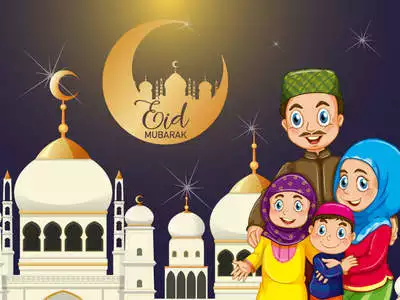

EID

Eid is an important religious festival celebrated by muslim community in whole world.The religious Eid is a single day and Muslims are not permitted to fast on that day.The holiday celebrates the conclusion of the 29 or 30 days of dawn-to-sunset fasting during the entire month of Ramadan.The date for the start of any lunar Hijri month varies based on the observation of new moon by local religious authorities, so the exact day of celebration varies by locality.